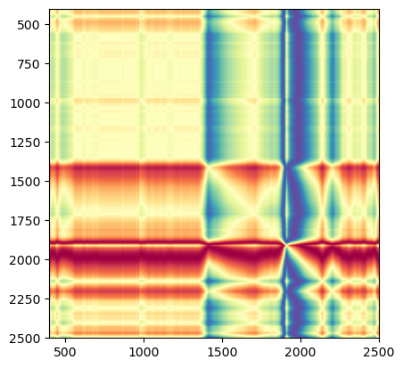
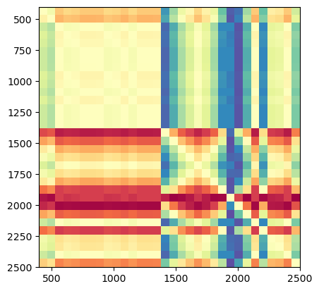

import matplotlib.pyplot as plt
from lssm.loading import load_ossl
from lssm.preprocessing import ToAbsorbance, ContinuumRemoval
from lssm.dataloaders import SpectralDataset, get_dls
from sklearn.pipeline import Pipeline
from sklearn.model_selection import train_test_splitTransforms
Custom PyTorch batch transforms
GADFTfm
GADFTfm (neg=True)
Transform batch of spectra S (B, 1, len(S)) into their Grammian Difference Matrix Field (GADF) of shape (B, 1, H, W)
Notes: https://arxiv.org/pdf/1506.00327.pdf
Example:
# Load data
analytes = 'k.ext_usda.a725_cmolc.kg'
data = load_ossl(analytes, spectra_type='visnir')
X, y, X_names, smp_idx, ds_name, ds_label = data
# Transform
X = Pipeline([('to_abs', ToAbsorbance()),
('cr', ContinuumRemoval(X_names))]).fit_transform(X)
# Train/valid split
X_train, X_valid, y_train, y_valid = train_test_split(X, y,
test_size=0.2,
stratify=ds_name,
random_state=41)
# Get PyTorch datasets
train_ds, valid_ds = [SpectralDataset(X, y, )
for X, y, in [(X_train, y_train), (X_valid, y_valid)]]
# Then PyTorch dataloaders
dls = get_dls(train_ds, valid_ds, bs=32)
first_batch = next(iter(dls.train))Reading & selecting data ...100%|██████████| 44489/44489 [00:15<00:00, 2786.86it/s]plt.imshow(GADFTfm()(first_batch)[0][0].squeeze().cpu(),
cmap='Spectral',
origin='upper', extent=[X_names[0], X_names[-1], X_names[-1], X_names[0]]);
print(_resizeTfm(GADFTfm()(first_batch))[0].shape)
plt.imshow(_resizeTfm(GADFTfm()(first_batch), size=32)[0][0].squeeze().cpu(),
cmap='Spectral',
origin='upper', extent=[X_names[0], X_names[-1], X_names[-1], X_names[0]]);torch.Size([32, 1, 224, 224])
StatsTfm
StatsTfm (cfgs)
Set pre-trained statistics.
type((1,2))tuple?fc.isinstance_strSignature: fc.isinstance_str(x, cls_name)
Docstring: Like `isinstance`, except takes a type name instead of a type
File: ~/mambaforge/envs/lssm/lib/python3.11/site-packages/fastcore/imports.py
Type: functionb = (torch.randn((1, 1, 1500)), torch.randn((1, 1, 1500)))fc.isinstance_str(b, 'tuple')TrueSNVTfm
SNVTfm (is_VAE:bool=False)
Apply SNV to input or to both input and output when used with a Variational Auto-Encoder.
| Type | Default | Details | |
|---|---|---|---|
| is_VAE | bool | False | If VAE apply SNV on both input and output. |
For instance, when X (input) is a 1D spectrum and the output is a single soil property:
batch = torch.randn(32, 1, 1500), torch.randn(32, 1)
batch_transformed = SNVTfm(is_VAE=False)(batch)
fc.test_eq(batch_transformed[0].shape, [32, 1, 1500])
fc.test_eq(batch_transformed[1].shape, [32, 1])batch = torch.randn(32, 1, 1500), torch.randn(32, 1, 1500)
batch_transformed = SNVTfm(is_VAE=True)(batch)
fc.test_eq(batch_transformed[0].shape, [32, 1, 1500])
fc.test_eq(batch_transformed[1].shape, [32, 1, 1500])